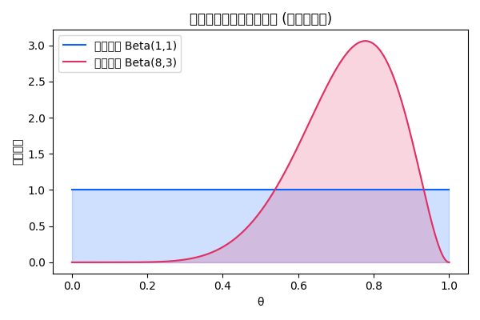

ベイズ統計入門
ベイズ統計は、事前情報と観測データを組み合わせて不確実なパラメータを推定するための枠組みです。頻度主義的な統計学とは異なり、パラメータそのものを確率変数として扱い、主観的な信念を確率で表現します。
ベイズ統計の概念
ベイズ統計では、パラメータに対して事前分布と呼ばれる確率分布を割り当てます。これは推定するパラメータに対する私たちの先入観や知識を表します【897447307761742†L10-L18】。観測データが得られたら、ベイズの定理を用いてこの事前分布を更新し、新しい分布（事後分布）を得ます【897447307761742†L165-L169】。事後分布はパラメータがどの値をとるかについての最新の信念を表現します。
ベイズの定理
ベイズの定理は次のように書けます：
p(\theta \mid D) \propto p(D \mid \theta)\, p(\theta)
ここで \(p(\theta)\) は事前分布、\(p(D \mid \theta)\) はデータの尤度、\(p(\theta \mid D)\) は事後分布です。データが与えられたときに、事前分布とデータの尤度を掛けることで事後分布が求められます。
ベイズ統計の特徴と利点
- 事前情報を取り込める – 過去の研究や専門家の知見を事前分布として組み込めるため、データが少ない場合でも推定が可能です。
- パラメータの不確実性を表現 – パラメータの点推定だけでなく、分布全体（事後分布）を得られるので、信用区間などの区間推定が自然に得られます。
- データの追加に柔軟 – 新しいデータが得られたら、事後分布を次の事前分布として更新するだけで簡単に推定を更新できます。
例：コイン投げにおける推定
コインが表になる確率 \(\theta\) を推定するとします。事前分布として一様分布 \(\mathrm{Beta}(1,1)\) を設定し、7回表、2回裏が出たデータを観測したとすると、事後分布は \(\mathrm{Beta}(8,3)\) になります。下図は事前分布と事後分布の比較を示しています。

このように、ベイズ統計では分布全体を扱うことで、推定値の不確実性や信頼範囲を明示的に評価できます。